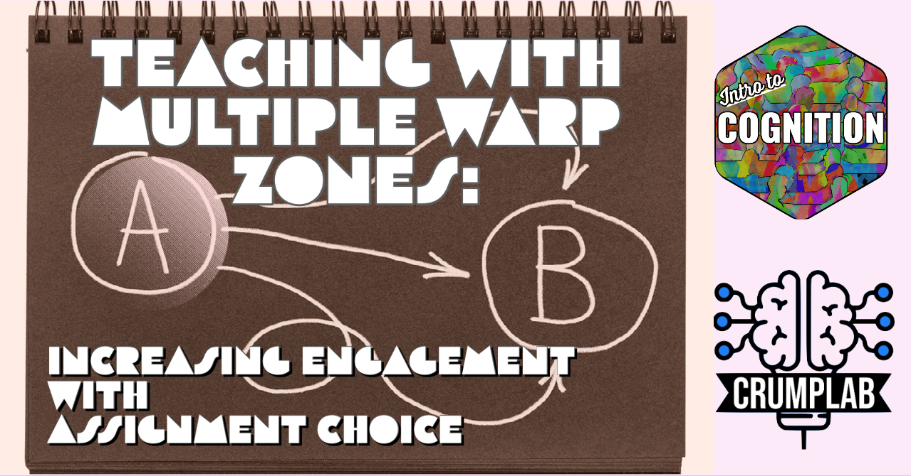

Teaching with multiple warp zones: Increasing engagement with assignment choice
teaching
cognition
Some thoughts on how I implemented loads of assignment choice in my intro to cognition course this semester.
Last knit: 2026-09-29
I lack positive emotions toward the process of grading in my courses. I have lots of positive emotions for my students. Grading stresses people out. I’ll save my thoughts about grading in general for another day.
What I really want to talk about is how I flooded the gates with tons of ways to get an A in the course. It worked, I had fun, I think my students had fun and they got a lot of well-deserved As. More important, my students engaged in the material in more ways than they normally would have.
I’ll say a little bit about my course and then talk about how I implemented lots of assignment choice this semester.
A bit of background
This spring 2022, I taught an introductory survey course on cognitive psychology. I’ve been at Brooklyn College for over a decade and haven’t taught my core area very often. Since summer 2021, I’ve been making up for lost time and decided to develop a suite of open educational resources for introductory cognition. I ran the course for the first time last semester. The modality was synchronous online, so students joined me every week for class lectures. I intended to have a textbook chapter for each week of the course, but I didn’t get that far in writing the textbook (note to self, that I need to finish the book).
In any case, the format for fall 2021 was fairly standard. I had weekly multiple choice quizzes that I posted on blackboard. I had two midterms and final exam. I gave students a few ways to get extra credit. And, I offered some optional writing assignments for students that wanted to dig into the material a little bit more.
The class went off the rails in the middle of the semester. That’s a story for another day, but let’s say an extraordinary amount of unapproved student collaboration occurred. I also learned that I would be teaching the same course in spring 2022 in an asynchronous online format. I knew I wanted to create more interesting assignments for the asynchronous version of the course. So, I made up a bunch of assignments and tested some of them on fall cohort as a second chance to make up for points they may have lost.
Planning for the asynchronous online modality
At Brooklyn College we don’t teach during the January intercession, so I had a bunch of time to plan out how I would convert the course from synchronous online to asynchronous online. Ultimately, this involved creating a ton of content, which took a huge amount of effort. I put all of that content into “learning modules” for each week of the course. All of the learning modules are on the course website, and freely available as an open educational resource.
I structured each learning module into three sections: Read, Watch/Listen, and Engage. The reading section usually linked to a textbook chapter, or any additional readings I wanted to assign. The watch/listen section contained mini-lectures that I recorded and posted YouTube (this part took so much time every week). The engage section contained quizzes and assignments that students could complete each week.
Now comes the fun part, here’s how I flooded the gates with assignment choice to increase engagement with the course material.
Multiple Warp Zones to an A
Given the asynchronous format, I wanted to give students every opportunity to do well in the course. I also wanted to dream up as many ways as I could think of to offer students meaningful ways to engage with the course material. Here’s what I did.
There were 12 learning modules and three exams. The grading rubric is below:
| Assignment | Points | Total |
|---|---|---|
| 12 Weekly Modules | 5+ | up to 60 |
| Extra Credit | see above rules | up to 10* |
| SUPER BONUS | see above rules | up to 40* |
| Midterm 1 | 13.33 | 13.33 |
| Midterm 2 | 13.33 | 13.33 |
| Final Exam | 13.33 | 13.33 |
| 100 |
There were three equally weighted exams, making up 40/100 points. The remaining 60/100 points came from any other assignment in the course.
warp zone 1: Ace the quizzes and exams
Each learning module had a quiz worth 5 points and there were 12 learning modules. So, a student could get 100% on all the quizzes for \(12*5 = 60\) points. If they also aced the exams, then they could get 100/100 for a perfect A+ score.
I view this as the standard fare option for getting through an intro survey course (i.e., pass the quizzes and exams). I think many students are familiar with this structure and some may even prefer it over a course with other kinds of assignments and assessment.
Students always want to know how they will be tested, so I told them that the quizzes they take each week will prepare them for the tests. The exam questions would be like the quiz questions, and some of the quiz questions might even reappear on the exams. I also let them do each quiz twice and allowed them to take the highest grade. It took a really long time to write pools of questions for every quiz and exam. A really long soul-sucking time. And, now I have a respectable test bank for the course (I wrote it using R/exams, which lets me export to Blackboard and pdf, it’s nifty).
But, I don’t think taking a bunch of quizzes and exams about cognition is particularly engaging. Also, I’m the one who wrote all of the questions, and even though I tried really hard to write good questions, I’m not 100% confident that my tests are good tests of what I’m trying to teach. So, it’s not clear how much test grades reflect student performance versus my performance as an instructor. Plus, my whole philosophy on testing is migrating, so I was looking to add more flare.
I usually require writing in all of my courses, no matter how many students I have. This could be viewed as a form of masochism. For example, I don’t have a TA for my class of 125+ students, and many instructors in my position might not assign writing assignments because they would be overwhelmed by grading.
Assigning multiple weekly writing assignments for a class that size could be viewed as a form of self-torture, and an over-bearing workload for students.
But, I did it anyway
warp zone 2: Everything is optional
As a reminder, students could get up to 60 points from quizzes. The rest of the points came from exams. The second warp zone was to create an alternate way of making up the 60 points. This would give students some choice in how they engaged in course material.
Students already had the choice of taking one quiz per week, and they could get all 60 points that way. To increase choice, I added one or two alternative writing assignments to each learning module. This part was way more fun for me in terms of generating what I considered interesting ways to engage in course material.
For examples, I made short writing assignments on how to read a primary research article, mental imagery, the APA’s apology to people of color, and many more.
Each writing assignment was 5 points, just like a quiz. So, each week students could take a quiz, complete a writing assignment, or both.
I managed the grading by making the assignments short (typically, 100-300 words). I did the grading mostly pass/fail, and students either got full points or not (if they submitted stuff that was way off base). It wasn’t possible to give in-depth feedback on each assignment because of the number of students, but it was possible to give group level feedback.
Not all of my students routinely did the writing assignments, but when they did them, they were really engaged as measured by how awesome their submissions were.
In addition to writing assignments for each learning module, I added on more and more optional assignments. For example, one assignment was to detect and report issues in the textbook I’ve been writing. Perhaps, this was ploy to get students to read the textbook… I also added points for participating in discussion boards, and added more general writing assignments that students could complete by the end of the semester (rather than by the due dates set at the end of each week).
Warp zone 3: Extra credit
At this point, students can get to 60 points by completing any combination of quizzes or assignments. That’s great. But, they still have to take these three exams for 40 points. And, students always want to know if there are extra credit options.
Lucky for them, I love extra credit. I made two tiers of extra credit. If students got to 60 points by completing quizzes and assignments, then any points over 60 was converted to extra credit. The conversion rule was 5 regular points to 1 extra credit. And, I allowed up to 10 extra credits. So, students could complete 10 additional 5 point assignments and get 10 points added onto their final score for the course. That’s a good dose of extra credit, and can make up for a bad showing on a midterm or final.
I love extra credit so much, that in the middle of the semester I made an addendum to the syllabus to describe a super bonus level of extra credit. If students actually did so many optional assignments that they got to the max of 10 extra credits, then I basically made the extra credit rain.
At the super bonus level mark I changed the conversion ratio from 5 to 1, to 2.5 to 1, which doubled the amount of extra from 10 points to 20 points; and, I raised the max extra credit to 40 points, which covers the points students needed to receive from exams.
This is just a fancy way of saying that students could get an A without passing the exams. They would have to pass lots of optional assignments, but IMO, the assignments I created were much more interesting and deserving of an A than the exams.
TLDR
I gave my students lots of ways to pass my course. Many of them tried the engaging and challenging options. I enjoyed what they produced, and I was proud of their scholarship, curiosity, and thoughtfulness. I hope they learned as much from the course as I learned from them.